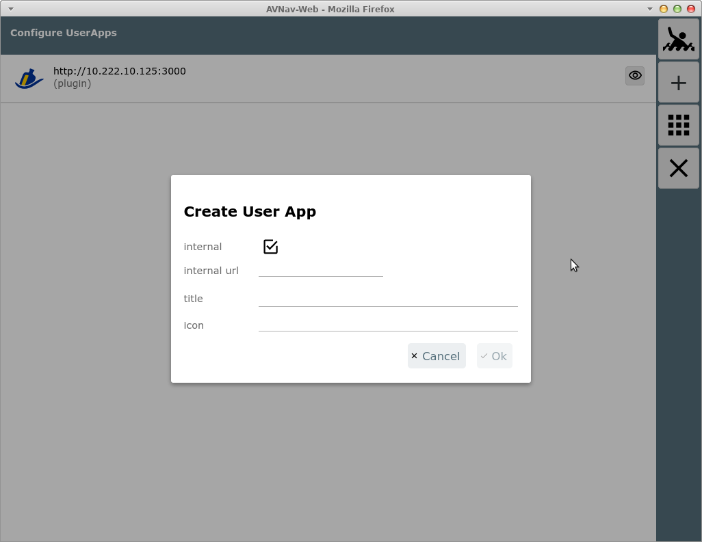
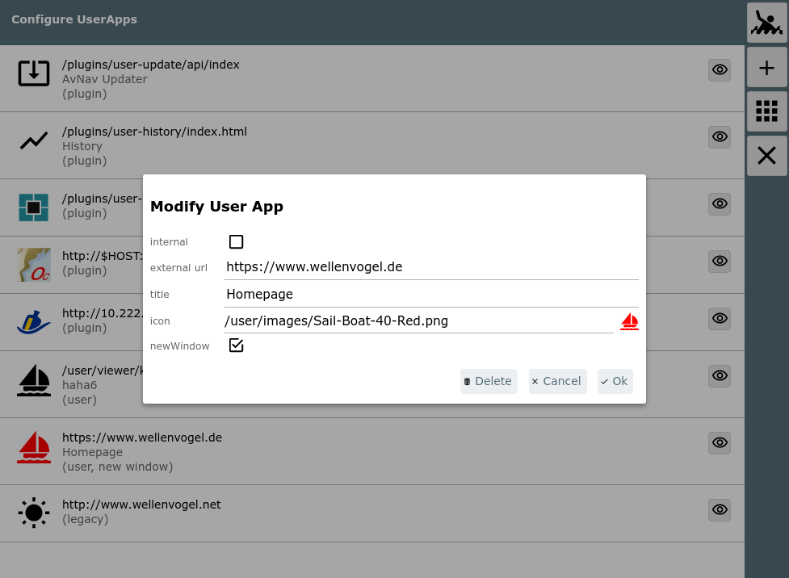
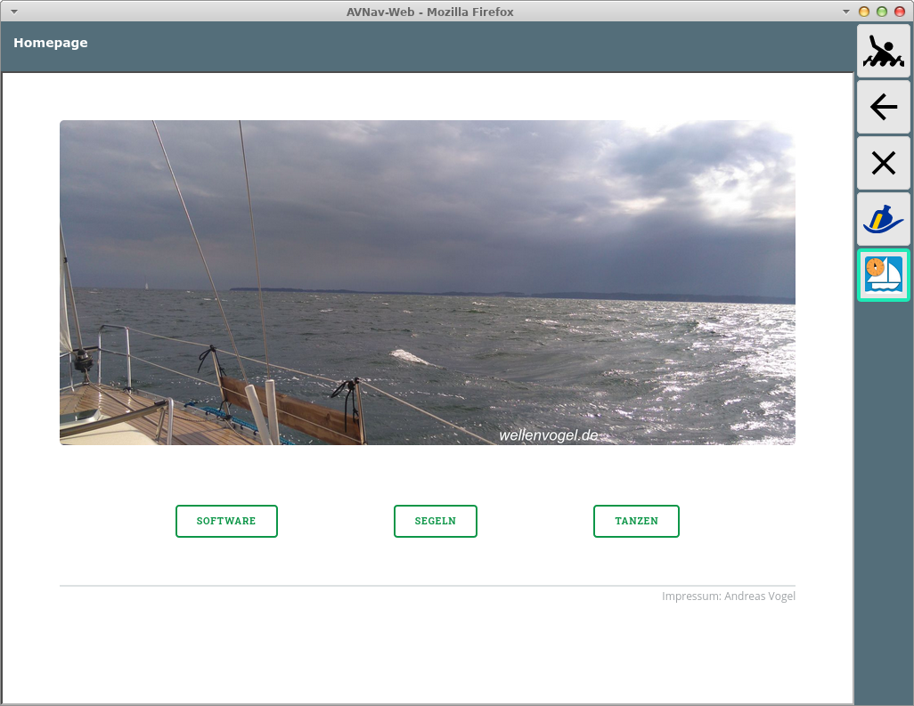

Von der Einstellungsseite erreicht man
über den Button  diese
Konfigurationsseite.
diese
Konfigurationsseite.
Eine "User App" ist eine externe oder interne HTML Seite, die auf der "User App" Seite in einem iframe angezeigt wird.

Alle konfigurierten User Apps werden angezeigt.
| Icon | Name | Funktion |
| MOB | Mann über Bord (siehe Hauptseite) | |
| + | AddonConfigPlus | Neue Konfiguration hinzufügen |
| AddonConfigAddOns | User App Seite anzeigen | |
| Cancel | zurück zur letzten Seite |
Für jede Konfiguration wird jeweils die URL und der optionale Titel
angezeigt. Ausserdem wird angezeigt, woher die Konfiguration stammt (im
Bild z.B. plugin). Falls die Konfiguration nicht gültig ist (z.B. Icon
nicht gefunden) wird "invalid" dazu angezeigt. Durch Klick auf die
Konfiguration kann sie bearbeitet werden (nur user Konfigurationen). Ein
Klick auf  geht
zur User App Seite, und die entsprechende
Konfiguration wird dort angezeigt.
geht
zur User App Seite, und die entsprechende
Konfiguration wird dort angezeigt.
Beim Hinzufügen einer Konfiguration oder beim Bearbeiten wird ein Dialog angezeigt.

Hier kann zunächst gewählt werden, ob eine externe oder eine interne HTML Seite angezeigt werden soll (im Bild: interne aktiv). Externe Seiten müssen mit einer URL der Form http(s)://... angegeben werden. Falls sie auf dem gleichen Server liegen wie AvNav, sollte statt des Hostnamens der String $HOST angegeben werden. Das wird dann von AvNav automatisch in die richtige Adresse übersetzt.
Interne HTML Seiten müssen voher in das Nutzer Dateien Verzeichnis hochgeladen worden sein.
Ausserdem muss für jede User App eine Icon Datei (svg, png, jpeg)
existieren. Diese muss ebenfalls über die Files/Download
Seite entweder zu Nutzer-Dateien oder zu Bildern hochgeladen worden sein.
Nach Auswahl der URL und des Icons kann noch ein Titel angegeben werden.
Wenn dieser leer bleibt, wird kein Titelbalken auf der Seite angezeigt.
Nach Speichern der Konfiguration kann sie über  getestet werden.
getestet werden.
Wenn eine
interne URL gewählt wurde und die Datei wird über die Files/Download
Seite gelöscht, wird auch die User App Konfiguration entfernt.
Wenn eine Icon-Datei gelöscht wird, wird die User App Konfiguration nicht
entfernt. Sie wird allerdings ungültig und wird auf der
User App Seite nicht mehr angezeigt.
Man kann dann hier die Konfiguration wieder korrigieren.
Wenn eine User App Konfiguration gespeichert wird, schreibt der Server
seine Konfigurationsdatei (avnav_server.xml) neu.
Damit er im Fehlerfall noch starten kann, wird beim jedem erfolgreichen
Start eine Datei avnav_server.xml.ok erzeugt - diese wird beim nächsten
Start genutzt, falls avnav_server.xml kaputt ist.